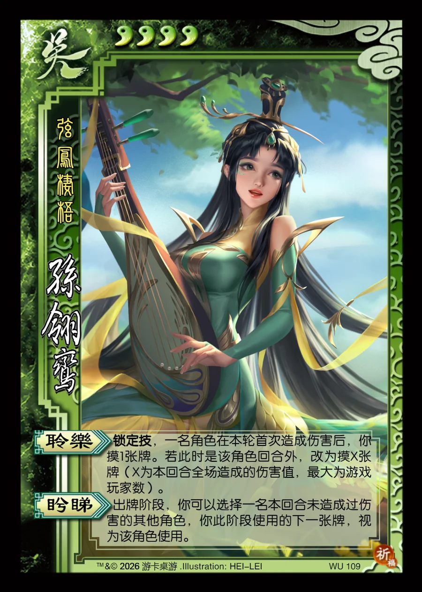

点击卡面查看大图
吴
孙翎鸾
♥4弦凤栖梧
聆乐锁定技
锁定技，一名角色在本轮首次造成伤害后，你摸1张牌。若此时是该角色回合外，改为摸X张牌（X为本回合全场造成的伤害值，最大为游戏玩家数）。
盻睇
出牌阶段，你可以选择一名本回合未造成过伤害的其他角色，你此阶段使用的下一张牌，视为该角色使用。

点击卡面查看大图
弦凤栖梧
锁定技，一名角色在本轮首次造成伤害后，你摸1张牌。若此时是该角色回合外，改为摸X张牌（X为本回合全场造成的伤害值，最大为游戏玩家数）。
出牌阶段，你可以选择一名本回合未造成过伤害的其他角色，你此阶段使用的下一张牌，视为该角色使用。